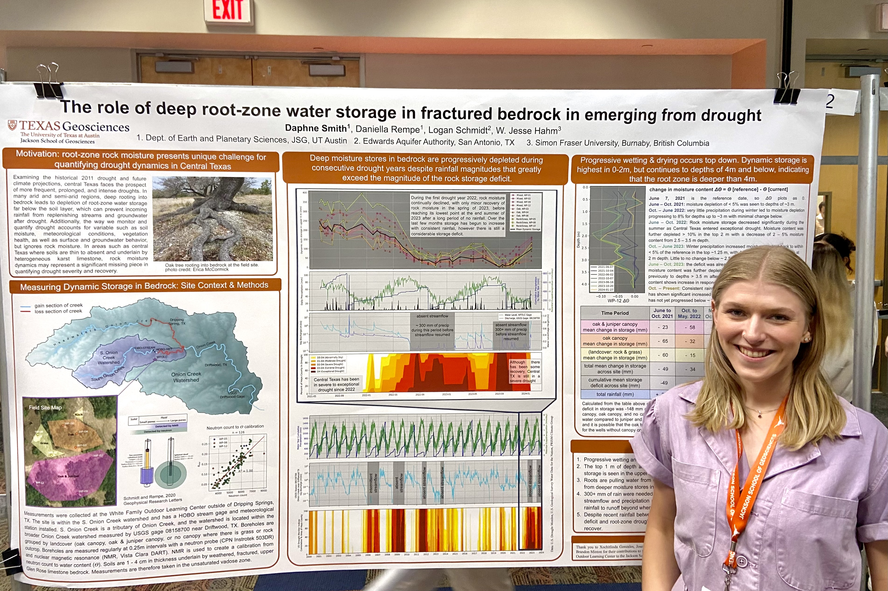

JSG Annual Student Research Symposium 2024
The Jackson School of Geosciences hosts an annual student research symposium where I had the opportunity to present my work to peers, faculty, research scientists, and invited professionals. My poster included the data of 40 + field campaigns in central Texas over the past nearly 3 years. I'm extremely proud of the work I've done, and I'm excited to finish writing it all up in my thesis, and getting this work published later this year!